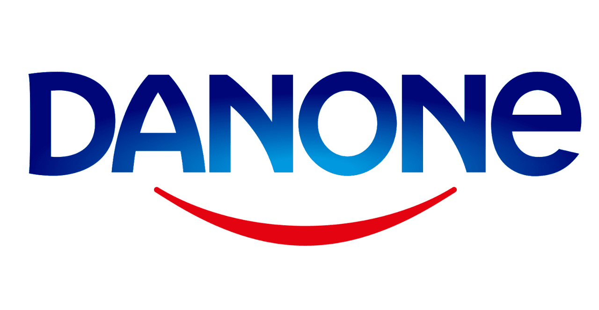
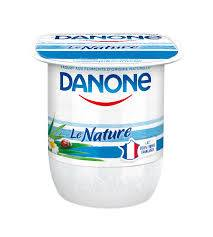

En 2018 en France, le marché des boissons rafraîchissantes sans alcool (BRSA) en GMS est un
marché relativement dynamique, avec des ventes en volume s’élevant à 10.6 milliards de litres
(+2%) et un CA de 6.2 milliards d’euros (+1.8%). Le taux de pénétration – relativement stable - de
ce marché grand public est de 99.8 % (-0.1 pt).
Les acteurs sont de grands groupes multimarques, les principaux étant les groupes Danone, Nestlé,
Coca-Cola, Pepsico, Schweppes et Britvic.
Cependant, les BRSA se décomposent en différentes catégories, aux poids et dynamiques très différenciés : 
En France, le groupe Danone est uniquement présent sur la catégorie des eaux. Les eaux plates
(naturelles et aromatisées) sont couvertes par les marques Evian et Volvic, tandis que les eaux
gazeuses (naturelles et aromatisées) sont couvertes par les marques Badoit et Salvetat.
Dans un contexte très compétitif, et avec l’émergence de nouvelles attentes de la part des
consommateurs, le marché des BRSA a dû faire peau neuve pour répondre aux enjeux suivants :
Pour répondre à ces enjeux, 6 grandes tendances émergent :
En parallèle de ces enjeux et tendances au niveau du produit et de la communication qui en est faite,
de nouvelles pratiques se mettent en place au niveau de la distribution, pour clarifier et optimiser le
merchandising du rayon des BRSA. Danone Eaux France s’est ainsi associé à Pepsico pour définir un
nouvel espace, plus structuré et plus lisible pour le consommateur.
En 2019, nous fêtons les 100 ans du premier yaourt Danone !

Isaac Carasso créa la marque Danone à Barcelone, en 1919, en lui donnant le
surnom de son fils : Danon, « Petit Daniel » en catalan. Les premiers yaourts
sont nés, fabriqués avec des bactéries lactiques sélectionnées par l’Institut
Pasteur. Ils sont d’abord distribués en pharmacie.
Dix ans plus tard, Daniel Carasso introduisait la marque Danone en France,
en créant la Société Parisienne du Yoghourt Danone et en inaugurant le
premier point de vente à Paris. Il n’avait pas encore 25 ans. Le yaourt est
alors très peu connu en France mais l’entreprise se développe très
rapidement grâce à la qualité de ses produits, à leur présentation et à
l’usage de la publicité qui souligne (déjà !) les effets bénéfiques du yaourt
pour la santé. Son entreprise grandit rapidement.
Contraint de quitter la France en 1941, Daniel Carasso rentre en France en 1945. La croissance
repart très vite en Europe. De 1950 à 1966, Danone connait une expansion considérable. En 1967,
Danone fusionne avec Gervais, faisant de la nouvelle entité Gervais-Danone, la 1ère entreprise
française de produits laitiers frais.
1972 marque le grand tournant avec la rencontre de Daniel Carasso et de Antoine Riboud. Cette
rencontre se traduira un an plus tard par la fusion des deux entreprises, faisant ainsi de Danone une
marque mondialement connue.
Antoine Riboud, est alors PDG du groupe BSN fondé en 1966 à la suite de la fusion de deux sociétés
verrières : Glaces de Boussois et Verrerie Souchon Neuvesel. Le groupe, outre une activité verrière
est présent sur différents marchés alimentaires : le marché de l’eau avec les marques Evian et Badoit,
le marché de la bière avec Kronenbourg et le marché de l’alimentation infantile avec la marque
Blédina. En fusionnant avec Gervais Danone, BSN devient la première entreprise agro-alimentaire
française.
En sortant définitivement de l’activité verrière en 1981, le groupe fait résolument le choix de
l’alimentaire. Cette stratégie lui permettra de se développer en Europe et de devenir ainsi, le
troisième groupe agro-alimentaire européen.
En 1994, BSN-Gervais Danone change de raison sociale et devient Danone. Franck Riboud prend les
commandes du groupe en 1996 et recentre dès 1997 l’activité du groupe sur trois activités : les
Produits Laitiers Frais, les Biscuits et Produits Céréaliers, et les Boissons.
Après l’extension en Europe, dans les pays de l’est, aux Etats Unis avec l’acquisition de Dannon, le
groupe se tourne résolument vers les pays du sud-est asiatique et de l’Amérique Latine. Ainsi, le
chiffre d’affaires hors d’Europe, qui n’était que de 610 M€ en 1989, atteignait 1,7 milliards en 1995
et plus de 3 milliards d’euros en 2000. Il représente aujourd’hui 66% des ventes du groupe Danone,
qui s’élèvent à 24.7 milliards d’euros en 2018.
2007 est également une année décisive : Danone cède son activité Biscuits et Produits Céréaliers LU
à l’américain Kraft Foods et rachète l’activité nutrition médicale et infantile au groupe hollandais
Numico.
Danone devient ainsi le 5ème groupe agro-alimentaire au niveau mondial, le leader mondial des
Produits Laitiers Frais, le n°2 des eaux embouteillées et de la nutrition infantile derrière Nestlé, et le
leader européen de la nutrition médicale.
En 2017, c’est Emmanuel Faber qui reprend la direction du groupe Danone. S’il est dans le groupe
depuis plus de 20 ans, et propose une stratégie de continuité, c’est un tournant historique pour
Danone dirigé depuis plus d’un demi-siècle par la famille Riboud.
Pour comprendre les orientations stratégiques du
groupe Danone, en termes de choix des marchés
et des catégories de produits où le groupe est
présent, ainsi que les caractéristiques des
produits développés par les différentes marques
du groupe, il est important de comprendre les
valeurs de Danone.
Danone s’est donné comme mission de faire
la Révolution de l’Alimentation, en
apportant la santé par l’alimentation au plus
grand nombre.
Cette mission se matérialise depuis 2017 par une nouvelle identité et une nouvelle signature :
« One Planet. One Health. », déclinée au travers de plusieurs films explicitant ce
positionnement comme
celui-ci disponible sur Youtube : https://youtu.be/MBiVdxlrARo.
En France, le souhait de favoriser une offre alimentaire de qualité, qui profite aux
producteurs et préserve les ressources naturelles s’exprime au travers d’un plan
2018-2025 construit autour de 3
engagements forts.
Les objectifs correspondant à cet engagement sont les suivants :
Ainsi, 100% des ingrédients sont aujourd’hui disponibles sur les différents sites des marques du
groupe (DanOn, Blédina, Evian, Volvic). Par ailleurs, Danone fait partie du groupe pilotant le
NutriScore, affichant la valeur nutritionnelle de ses produits laitiers frais, depuis février 2018 sur le
site DanON et progressivement sur les emballages jusqu’à fin 2019.
Dans l’optique de répondre aux attentes de simplicité et de naturalité de ses consommateurs, Danone
apporte une grande attention à ses recettes. Cela se traduit par exemple, dans la division Eaux, par
le fait que 100% des boissons aromatisées à base d’eau minérale naturelle ont un taux de sucre
inférieur à 5 g de sucre / 100 ml fin 2018, soit 40% moins sucrées que la moyenne des boissons
sans alcools. Ces mêmes boissons aromatisées contiennent par ailleurs uniquement des arômes
naturels et sont sans édulcorant artificiel ni conservateur6.
D’ici 2020, Danone souhaite que 100% des marques enfant
de Danone proposent une offre bio. Sur le marché des eaux
minérales naturelles, cela s’est traduit par de nouveaux
produits et des adaptations des produits existants :
Danone accompagne ses partenaires agricoles conventionnels et biologiques vers des pratiques
agricoles durables en faveur de la préservation des sols. Utilisation raisonnée de pesticides et
d’engrais, rotation et diversité des cultures, préservation de la biodiversité, bien-être animal,
contribution à la lutte contre le changement climatique par la réduction de l’empreinte carbone, etc.
Autant de pratiques qui seront développées avec les agriculteurs partenaires de Danone.
Un autre objectif est qu’en 2025, 100% des produits cultivés en France seront issus d’une agriculture
régénératrice. Ainsi Danone protège par exemple depuis 25 ans, en partenariat avec les parties
prenantes locales, la zone d’infiltration des eaux minérales naturelles Evian, et a dupliqué ces bonnes
pratiques à Volvic, Badoit et La Salvetat.